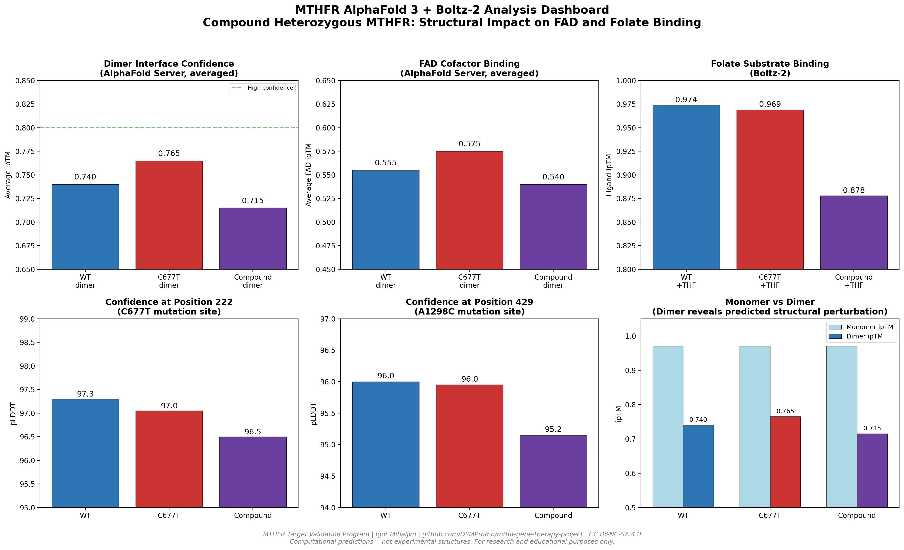
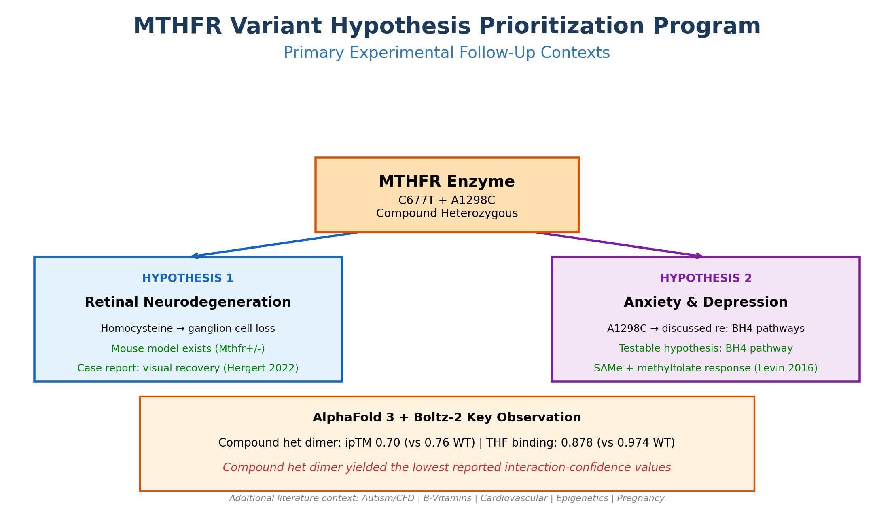
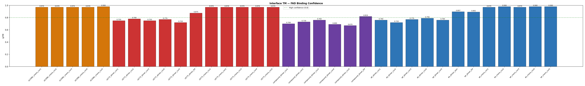
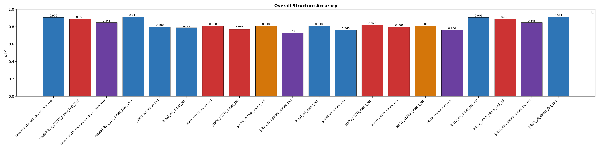
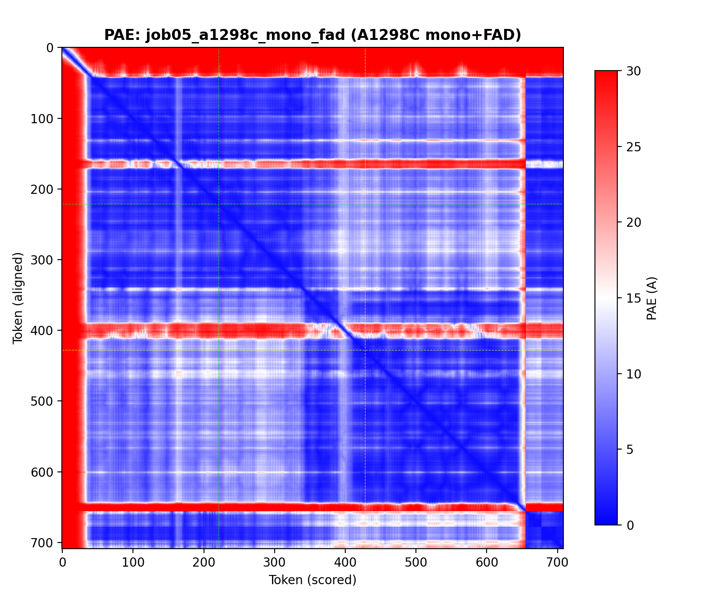
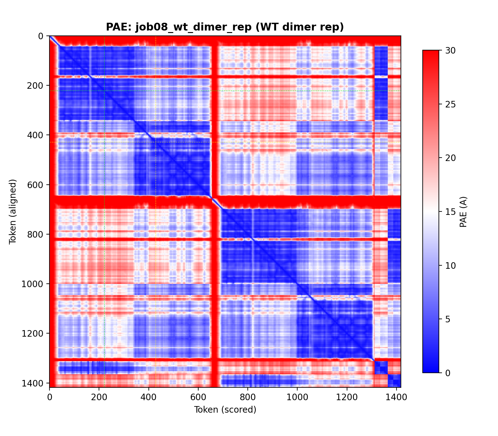
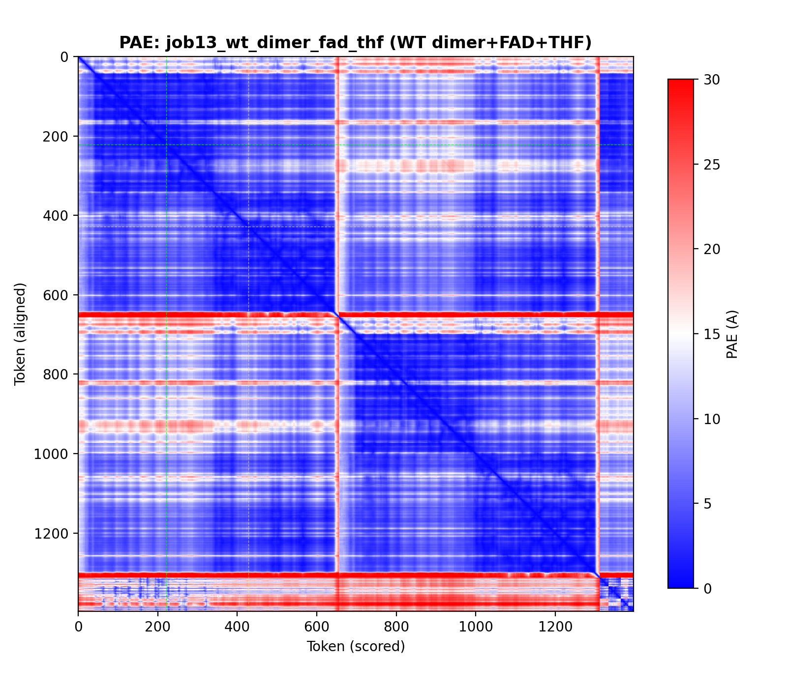
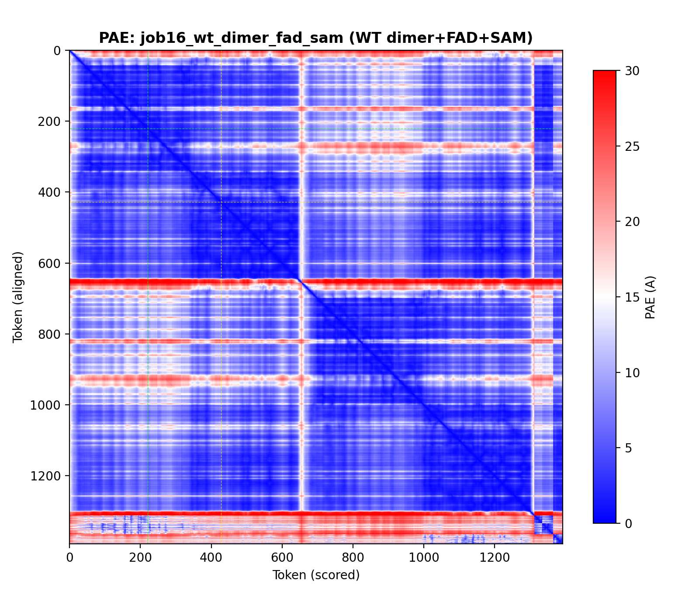

Structural Analysis of Dimer Stability, Cofactor Binding, and Substrate Interaction in High-Risk MTHFR States
Generated: 2026-03-25 21:13 | Author: Igor Mihaljko / DSM.Promo | ORCID: 0009-0000-1408-1065 | Jobs analyzed: 16 | Platforms: AlphaFold 3 Boltz-2


Backbone traces colored by pLDDT confidence (blue=high, red=low). Mutation sites marked with stars.

AlphaFold 3 FAD cofactor binding — monomers and homodimers with independent replication seeds
| Job | Config | pTM | ipTM | Rank | FAD ipTM | pLDDT@222 | pLDDT@429 |
|---|---|---|---|---|---|---|---|
| job01_wt_mono_fad | WT mono+FAD | 0.800 | 0.970 | 0.970 | 0.970 | 99 | 97 |
| job02_wt_dimer_fad | WT dimer+FAD | 0.790 | 0.760 | 0.800 | 0.570 | 97 | 96 |
| job03_c677t_mono_fad | C677T mono+FAD | 0.810 | 0.970 | 0.970 | 0.970 | 98 | 98 |
| job04_c677t_dimer_fad | C677T dimer+FAD | 0.770 | 0.750 | 0.780 | 0.570 | 97 | 96 |
| job05_a1298c_mono_fad | A1298C mono+FAD | 0.810 | 0.970 | 0.970 | 0.970 | 99 | 97 |
| job06_compound_dimer_fad | Compound dimer+FAD | 0.730 | 0.700 | 0.730 | 0.530 | 97 | 95 |
| job07_wt_mono_rep | WT mono rep | 0.810 | 0.980 | 0.970 | 0.980 | 99 | 98 |
| job08_wt_dimer_rep | WT dimer rep | 0.760 | 0.720 | 0.760 | 0.540 | 97 | 96 |
| job09_c677t_mono_rep | C677T mono rep | 0.820 | 0.970 | 0.970 | 0.970 | 98 | 98 |
| job10_c677t_dimer_rep | C677T dimer rep | 0.800 | 0.780 | 0.820 | 0.580 | 97 | 96 |
| job11_a1298c_mono_rep | A1298C mono rep | 0.810 | 0.970 | 0.970 | 0.970 | 98 | 98 |
| job12_compound_rep | Compound dimer rep | 0.760 | 0.730 | 0.770 | 0.550 | 96 | 95 |
Boltz-2 THF folate substrate and SAM allosteric inhibitor binding via Tamarind Bio
| Job | Config | pTM | ipTM | Confidence | Ligand ipTM | pLDDT@222 | pLDDT@429 |
|---|---|---|---|---|---|---|---|
| job13_wt_dimer_fad_thf | WT dimer+FAD+THF | 0.906 | 0.892 | 0.869 | 0.974 | 98 | 92 |
| job14_c677t_dimer_fad_thf | C677T dimer+FAD+THF | 0.891 | 0.875 | 0.869 | 0.969 | 98 | 95 |
| job15_compound_dimer_fad_thf | Compound dimer+FAD+THF | 0.848 | 0.819 | 0.854 | 0.878 | 97 | 95 |
| job16_wt_dimer_fad_sam | WT dimer+FAD+SAM | 0.911 | 0.897 | 0.877 | 0.925 | 97 | 95 |


Blue = confident relative positioning. Red/white = uncertain. Dashed lines mark mutation positions (222, 429).







MTHFR functions as a homodimer in the body. Monomer predictions (Jobs 1,3,5) show all variants fold correctly — the mutations don't destroy the protein. But dimer predictions (Jobs 2,4,6) reveal inter-chain effects: FAD binding drops from 0.97 to 0.53-0.57, and the compound heterozygous dimer is consistently worst. This is the biologically relevant finding.
AlphaFold 3 Server (Jobs 1-12) provided the core FAD binding analysis. Boltz-2 (Jobs 13-16) enabled THF substrate and SAM inhibitor modeling not possible through AlphaFold Server's interface. Both confirm the same trend: compound het = worst structural scores.
Because MTHFR dysfunction has been linked in prior literature to homocysteine-related retinal injury, the retina is a candidate downstream system for validation. The current computational results do not establish efficacy in retinal disease, but they support testing whether high-risk MTHFR states are associated with measurable retinal biomarkers. Prior evidence: Mthfr+/- mice show ganglion cell loss (Markand 2015); case report of visual recovery with betaine (Hergert 2022).
Because folate cycle dysfunction may influence BH4-dependent neurotransmitter pathways, neuropsychiatric phenotypes are a second candidate area for validation. The current structural data do not establish causation or treatment effect, but they support testing whether selected high-risk MTHFR states correlate with measurable biochemical and clinical features. This may be relevant in a subset of treatment-resistant presentations involving upstream one-carbon and BH4-related biology.
Additional downstream systems (autism/CFD, B-vitamin metabolism, cardiovascular, epigenetics, pregnancy) are documented in the full research paper as candidate areas for future investigation.